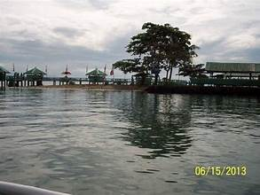
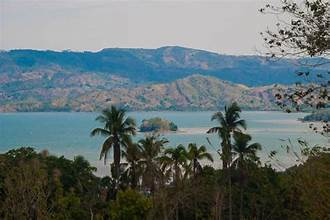
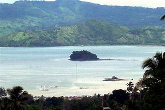

Overview
The Dao Dao Islands are a cluster of small islands located just off the coast of Pagadian City. They are among the most popular tourist destinations in Zamboanga del Sur, known for their clear turquoise waters, white sand beaches, and thriving marine life.
The Islands
The group consists of several small islets surrounded by shallow coral reefs. The water is remarkably clear, making it ideal for snorkeling and observing the colorful underwater ecosystem. The beaches are lined with coconut trees, creating a classic tropical island setting.
Getting There
The islands are accessible by a short boat ride from the Pagadian City waterfront. Bangka boats are available for hire, and the journey takes approximately 15 to 30 minutes. Day tours and overnight packages are offered by local operators.
Activities
Popular activities include swimming, snorkeling, beach volleyball, island hopping, and simply relaxing on the beach. Fishing trips can also be arranged with local boatmen. The calm waters are suitable for families with children.
Marine Environment
The coral reefs around the Dao Dao Islands support a diverse array of marine species including tropical fish, sea turtles, and various invertebrates. Conservation efforts are in place to protect the reefs from overfishing and destructive practices.
Practical Information
Basic facilities including cottages, picnic huts, and food stalls are available on the main island. Visitors are encouraged to bring their own snorkeling gear, sunscreen, and drinking water. Environmental fees may apply.
Key Facts
- Location: Off the coast of Pagadian City
- Island Type: Small island cluster
- Water Activity: Swimming, snorkeling, island hopping
- Access: Boat ride from Pagadian port
- Best Time to Visit: March to May